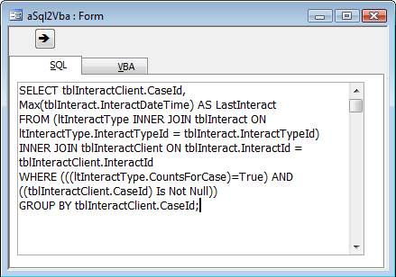

Microsoft Access: Советы для серьезных пользователей
Автор Allen Browne. , март 2007 г. Последнее обновление: ноябрь 2008 г.
Оригинал http://allenbrowne.com/ser-71.html
Перевел Александр Артамонов, ноябрь 2011 г.
Копировать инструкцию SQL из запроса в VBA

Вместо того, чтобы печатать сложный запрос непосредственно в коде VBA, разработчики часто строят запрос графически, переключают в SQL вид, копируют текст и вставляют в редактор VBA.
Если вы это делали, вы знаете, как утомительно разбираться с кавычками и концами строк.
Решение: создайте форму, у которую вы вставите инструкцию SQL и заставите Аксесс сформировать SQL строку.
Создание формы
Форме нужны только два текстовых поля и командная кнопка. Инструкции SQL могут быть довольно длинные, так что лучше разместить текстовые поля на разных страницах вкладки.
Private Sub cmdSql2Vba_Click()
Dim strSql As String
'Назначение: Конвертация инструкции SQL в строковое значение для вставки в код VBA code.
Const strcLineEnd = " "" & vbCrLf & _" & vbCrLf & """"
If IsNull(Me.txtSQL) Then
Beep
Else
strSql = Me.txtSQL
strSql = Replace(strSql, """", """""") 'Удвойте возможные кавычки.
strSql = Replace(strSql, vbCrLf, strcLineEnd)
strSql = "strSql = """ & strSql & """"
Me.txtVBA = strSql
Me.txtVBA.SetFocus
RunCommand acCmdCopy
End If
End Sub
Использование формы
Чтобы пользоваться формой:
Совет: Если вам нужны дополнительные разрывы строк в коде VBA, нажмите Enter чтобы создать эти переносы строк в режиме SQL конструктора запросов или в вашей форме.
Примечание переводчика: готовый пример такой утилиты, выполненной в виде надстройки Аксесс, чтобы загружать форму из любого приложения mdb - при наличии полной версии Access - можно скачать здесь. Можно пользоваться и как самостоятельным приложением, не установленным в виде надстройки меню